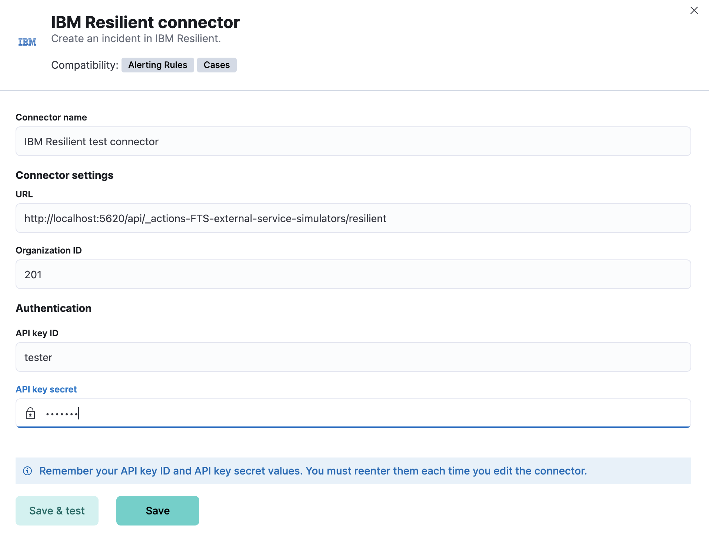
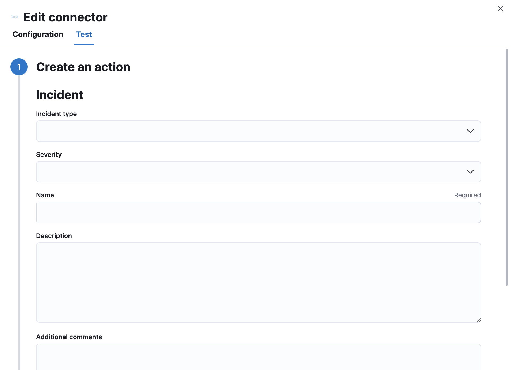

IBM Resilient connector and action
editThe IBM Resilient connector uses the RESILIENT REST v2 to create IBM Resilient incidents.
Create connectors in Kibana
editYou can create connectors in Stack Management > Connectors or as needed when you’re creating a rule. For example:

Connector configuration
editIBM Resilient connectors have the following configuration properties:
- API key ID
- The authentication key ID for HTTP Basic authentication.
- API key secret
- The authentication key secret for HTTP Basic authentication.
- Organization ID
- The IBM Resilient organization ID.
- URL
- The IBM Resilient instance URL.
Test connectors
editYou can test connectors as you’re creating or editing the connector in Kibana. For example:

IBM Resilient actions have the following configuration properties.
- Additional comments
- Extra information for the client, such as how to troubleshoot the issue.
- Description
- The details about the incident.
- Incident type
- The type of the incident.
- Name
- A name for the issue, used for searching the contents of the knowledge base.
- Severity
- The severity of the incident.
Connector networking configuration
editUse the action configuration settings to customize connector networking configurations, such as proxies, certificates, or TLS settings.
You can set configurations that apply to all your connectors or use xpack.actions.customHostSettings to set per-host configurations.